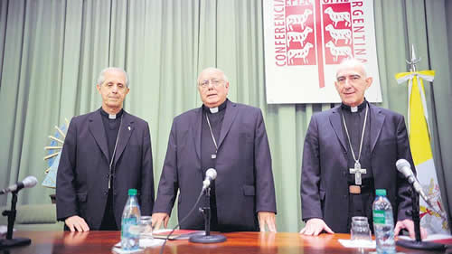

Real Chubut - Agencia de Noticias


“La crisis golpea a todo el pueblo”

En la asamblea de obispos, Oscar Ojea señaló que la crisis “va resintiendo la confianza en la dirigencia política” e hizo una autocrítica sobre el rol de la Iglesia. Fuentes del Episcopado desmintieron que se vaya a tomar ahora una decisión sobre el financiamiento eclesiástico.
El presidente de la Conferencia Episcopal Argentina (CEA), Oscar Ojea, dijo al iniciar la asamblea de los obispos católicos reunidos desde ayer en Pilar que “estamos terminando un año sumamente difícil”, marcado por acontecimientos que “nos han provocado perplejidad” y “nos plantean grandes desafíos pastorales”. En su homilía, el obispo de San Isidro enumeró tales hechos incluyendo allí “la habilitación del debate sobre el aborto”, “el fenómeno de las apostasías”, “las denuncias de abusos que aumentan el dolor en lo más profundo del corazón de la Iglesia” y los “ataques a la persona del Santo Padre desde dentro y desde fuera de la Iglesia de un modo que no tiene precedentes”.
“Todo esto –siguió diciendo Ojea en la misa inaugural– lo hemos vivido en medio de una crisis social y económica que golpea a todo el pueblo argentino, y que va resintiendo la confianza en la dirigencia política, aumentando el mal humor social, el enojo y la intolerancia que hace muy crispada la convivencia.”
Como es habitual en cada asamblea, los obispos católicos iniciaron su segundo encuentro del año en la casa de ejercicios espirituales El Cenáculo (La Montonera), con una puesta al día de la realidad del país a través de la mirada de los responsables eclesiásticos. De la reunión, que se extenderá hasta el próximo viernes, participan 93 obispos diocesanos y auxiliares. Fueron invitados también 43 obispos eméritos (ya retirados) y el nuncio apostólico (embajador vaticano), obispo Léon Kalenga Badikebele.
Ojea les pidió a sus colegas obispos dejar de lado “la ira, el enojo o la victimización” frente a las nuevas situaciones y tampoco caer en la “parálisis y la inmovilidad” para, por el contrario, “romper el círculo cerrado de la comodidad” e invitar “a los excluidos, a los pobres, a los lisiados, a los ciegos” siguiendo el ejemplo de Jesús.
Dijo también que los obispos “tenemos que aprender a desprendernos de un reconocimiento social que teníamos en otro tiempo y que vamos dejando de tener”. Y animó a sus pares a actuar con humildad, paciencia y coraje para “encarar los cambios” y “para hablar libremente y con verdad incluso en situaciones adversas”.
Inquietudes y reflexiones
En la primera sesión realizada el lunes por la tarde, los obispos hablaron sobre de la realidad nacional. Es una instancia que suele denominarse “intercambio pastoral”, oportunidad en la que los obispos “comparten entre sí inquietudes y reflexiones pastorales en torno a temas diversos”, de acuerdo a lo expresado en la información oficial. De este diálogo surgen criterios comunes para el accionar de la Iglesia Católica en el país y, en ciertas ocasiones, se sientan las bases para un documento colectivo que se emite al final del plenario. Hasta el momento no hay confirmación de que ello pueda ocurrir en esta oportunidad.
En su agenda, los obispos incluyeron también una consideración acerca de la iniciativa destinada a prescindir de los aportes del Estado para la Iglesia Católica. Sin embargo, las fuentes oficiales del Episcopado desmintieron totalmente que una decisión al respecto vaya a ocurrir ahora por cuanto aún no se avanzó lo suficiente como para tomar una determinación en ese sentido. Muchos obispos consideran que una medida en tal sentido constituiría un mensaje importante hacia la sociedad respecto de la autonomía de la Iglesia para expedirse sobre diferentes temas.
En el transcurso de la asamblea, los obispos recibirán la visita del cardenal Peter Turkson, prefecto (ministro) del Dicasterio para el Servicio del Desarrollo Humano Integral, un organismo creado últimamente por el papa Francisco para hacerse cargo de los temas sociales. Turkson informará a los obispos argentinos acerca del funcionamiento del área a su cargo.
Habrá también una evaluación por parte de los obispos de todo lo sucedido en torno al debate y la resolución legislativa en relación con el proyecto de interrupción voluntaria del embarazo.
Respecto de los temas sociales, llamaron la atención las manifestaciones del recientemente designado arzobispo de La Plata, Víctor Manuel Fernández, en línea también con algunos de los dichos de Ojea. En declaraciones al diario El Día de la capital bonaerense, el arzobispo sostuvo que en el mundo existe un fuerte predominio del “pensamiento neoliberal” que rechaza que la Iglesia hable de cuestiones sociales y que “la prefiere encerrada en la sacristía”. Y agregó que en la Argentina esa postura neoliberal se acentuó en los medios de comunicación, que “parecen responder a ese paradigma”, ya sea por intereses económicos, “por alianzas de sus dueños o por pasiones políticas”.
El arzobispo Fernández –uno de los prelados más cercanos a Francisco– dijo también que en las cuestiones sociales la Iglesia se pone “inevitablemente del lado de los más débiles y perjudicados”, pero no por una cuestión de oposición política, “sino porque nos interesa cuidar la dignidad de los más desprotegidos”. Y agregó que “los obispos actuales hablamos muy poco sobre los problemas sociales; y lo hacemos con miedo a quedar en ridículo por los propios pecados de la Iglesia”.
Fuente: Pagina 12